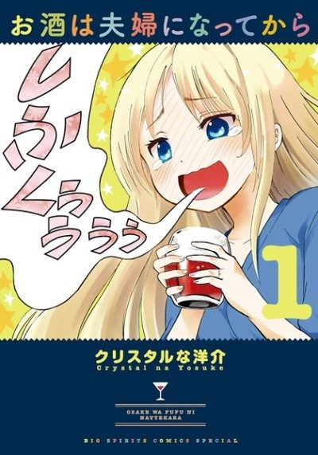

Love is Like a Cocktail
お酒は夫婦になってから
Chisato looks like a cool career woman at work, but at home she can't hold her alcohol and loves the cocktails her husband makes.
We haven't found where the anime ends in the manga yet.
6.7AniList score
—Animeter, no votes yet
14episodes, 2 seasons
Rate it or report where you stopped
2 seasons, 14 episodes
In airing order. Episode numbers on this site count straight through every season, so season 2 starts at episode 14.
1
2017 · TV short
Love is Like a Cocktail
Episodes1–1313 ep
2
2018 · Web
Love is Like a Cocktail Episode 14
Episodes14–141 ep
Sources: AniList